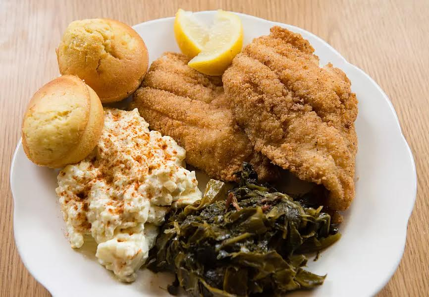

Potato Salad Recipe
- Cut each potato in half. Place in large pot and cover with 1 inch of water, place potatoes in a large bowl, In a small bowl mix togerther mayonnaise,vinegar,sugar, and onion powder.
- Add relish, celery onion, and the chopped eggs, add salt and pepper to taste, top with sliced eggs and sprinkle with paprika.
Collard Green Recipe
- Heat oil in large pot over medium-high. Add bacon, and cook until crisp. Remove bacon from pan, crumble and return to the pan.
- Pour in chicken broth, and season with salt, pepper, and red pepper flakes Reduce heat to low, cover, and simmer for 45 mintues, or until greens are tender.
Cornbread Recipe
- Preheat oven to 400 degrees F (200 degrees C). Spray or lightly grease a 9 inch round cake pan.
- In a large bowl, combine flour, cornmeal, sugar, salt and baking powder. Stir in egg, milk and vegetable oil until well combined. Pour batter into prepared pan.
- Bake in preheated oven for 20 to 25 minutes, or until a toothpick inserted into the center of the loaf comes out clean.
Crunchy Fried Fish Recipe
- Season fish pieces with salt, pepper, garlic powder, onion powder, season salt, and cayenne pepper
- Preheat your oil to 325 degrees F.
- Crack eggs into a bowl large enough for the fish to be dipped in the eggs.
- Prepare your dredging station. Place your fish in a bowl. Next to that, your bowl of eggs, and next to that, your flour.
- Take your fish pieces, lightly dust them with flour, then dip them in the eggs until they are coated, and then place them in the flour mixture.
- Place fish pieces in hot oil. Cover, and fry until golden, turning once, 15 to 20 minutes. Drain on paper towels.